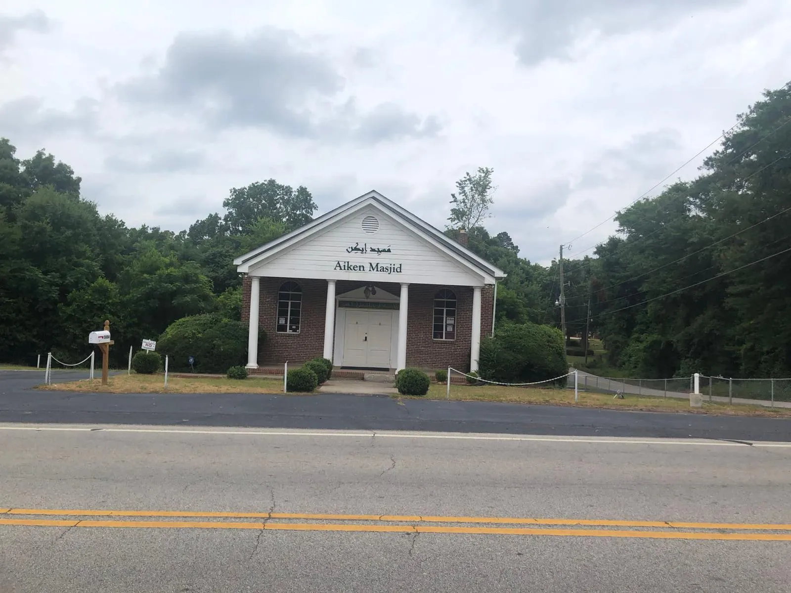
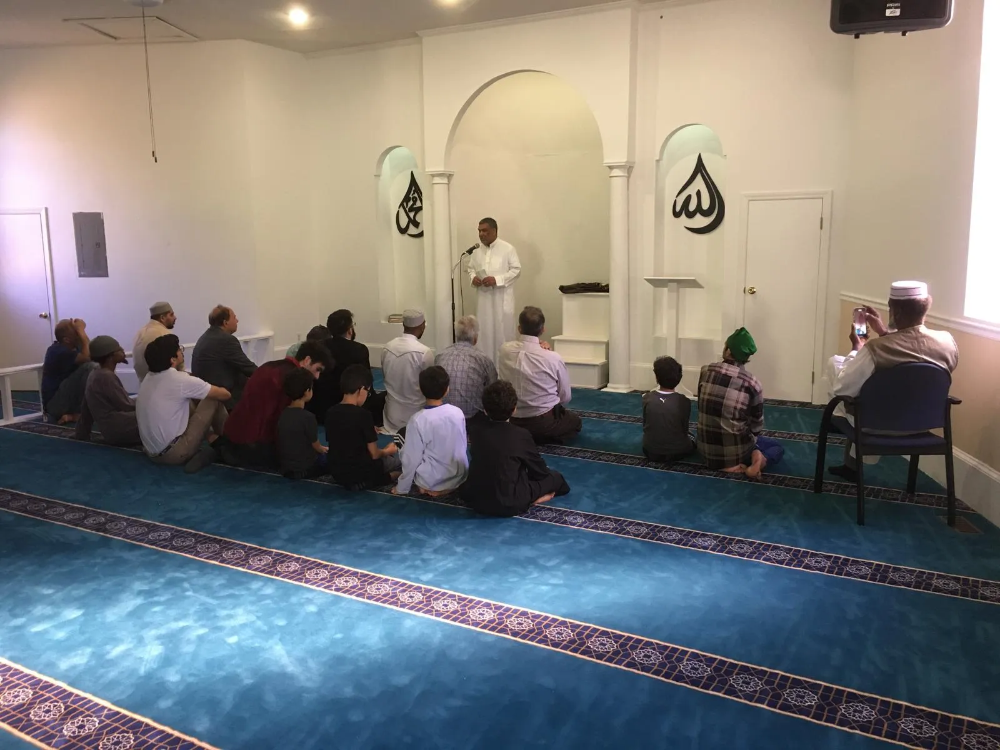
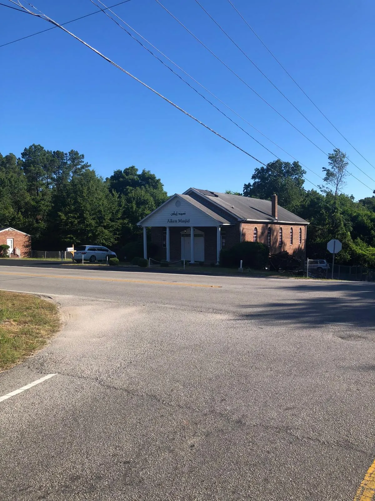
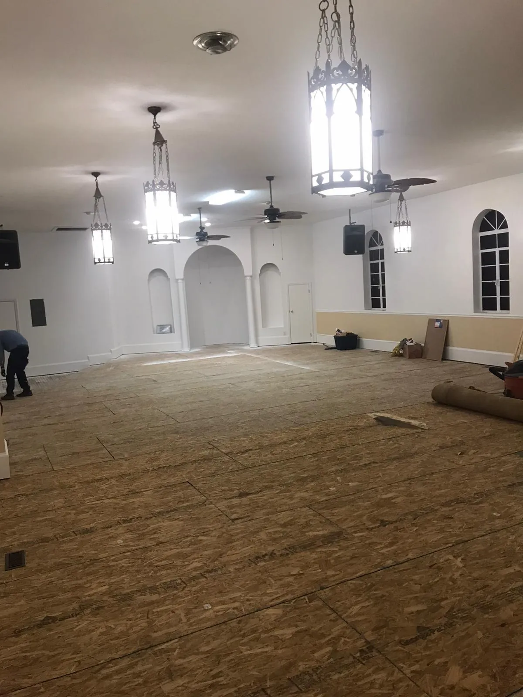
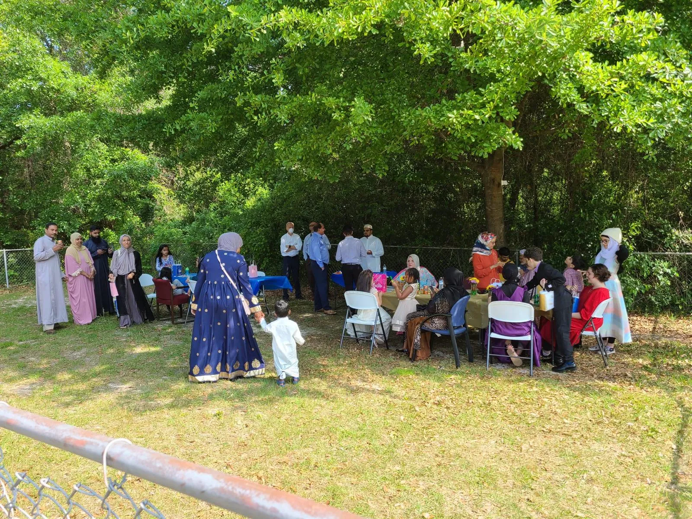

Jumu’ah
Join the community each Friday for the khutbah and congregational prayer. The current start time is shared on WhatsApp.
Get this week’s time
3604 Trolley Line Road · Aiken, South Carolina
Aiken Masjid welcomes Muslims, neighbors, families, students, and visitors with a spirit of worship, learning, and service.
Current time shared on WhatsApp
A peaceful place to worship
Across from USC Aiken
Welcome to Aiken Masjid
For decades, Muslims in Aiken traveled to Augusta or Columbia for weekly services and holidays. In 2021, a former church near USC Aiken and Aiken Regional Hospital became the answer to a long-held prayer.
Read our story


Our story
For many years, Muslim families in Aiken hoped for a masjid of their own. Houses and former churches were considered, but no option met the community’s needs at an affordable price.
In 2021, a church on Trolley Line Road became available. Its location—near USC Aiken and Aiken Regional Hospital—made it a natural gathering place. Local Muslims and supporters from the Islamic Society of Augusta came together to form the Aiken Muslim Association and purchase the property.
The community purchased the property for $150,000.
Volunteers cleared, leveled, repaired, painted, and prepared the prayer hall.
Carpet and padding completed the new prayer space.
Aiken Masjid welcomed around 50 people for its first Eid al-Fitr.
The property was deeded to the North American Islamic Trust in February 2022 to help preserve it as a Muslim facility for generations to come.
Prayer · Learning · Community
Aiken Masjid is still growing. These are the ways our community gathers now and the areas we hope to strengthen together.
Join the community each Friday for the khutbah and congregational prayer. The current start time is shared on WhatsApp.
Get this week’s timeA quiet, welcoming place to stand together in salah. Confirm access and current congregational times before traveling.
Contact the masjidQur’an learning, reminders, and study gatherings are shared with the community as they are scheduled.
See what’s comingSeasonal prayer, iftar, and Eid announcements are coordinated according to the Islamic calendar and local plans.
Follow announcementsShared meals, family gatherings, and service projects make the masjid a home for relationships as well as prayer.
See our communityHave an idea for youth, families, education, outreach, or community care? Help shape the next chapter.
Suggest a service
“The most beloved of people to Allah are those who are most beneficial to people.”
What’s on
Our calendar is still taking shape. For now, WhatsApp is the best place for timely announcements and last-minute updates.
Weekly khutbah and congregational prayer. Time announced in the community group.
Qur’an, reminders, learning, and conversation for adults and families.
Prayer, shared meals, and community celebrations announced closer to each occasion.
Help us grow thoughtfully
Tell us what would genuinely serve Muslims and neighbors in Aiken. Your idea will open as a WhatsApp message to the masjid contact number.
Life at Aiken Masjid
From renovation days to prayer, Eid, meals, learning, and time together—these are the people and moments that made the masjid a home.
Open & accountable
Aiken Muslim Association is a South Carolina nonprofit organized to serve Muslims in Aiken County within the framework of Islam, promote unity, share an understanding of the faith, and strengthen relationships with our neighbors.
Visit Aiken Masjid
Come for prayer, meet the community, or learn more about Islam. If it is your first visit or you are traveling for a particular prayer, call or check WhatsApp before you set out.
3604 Trolley Line Road Aiken, SC 29801Stay connected
Get prayer times, event notices, and important masjid updates on your phone.
Open WhatsApp